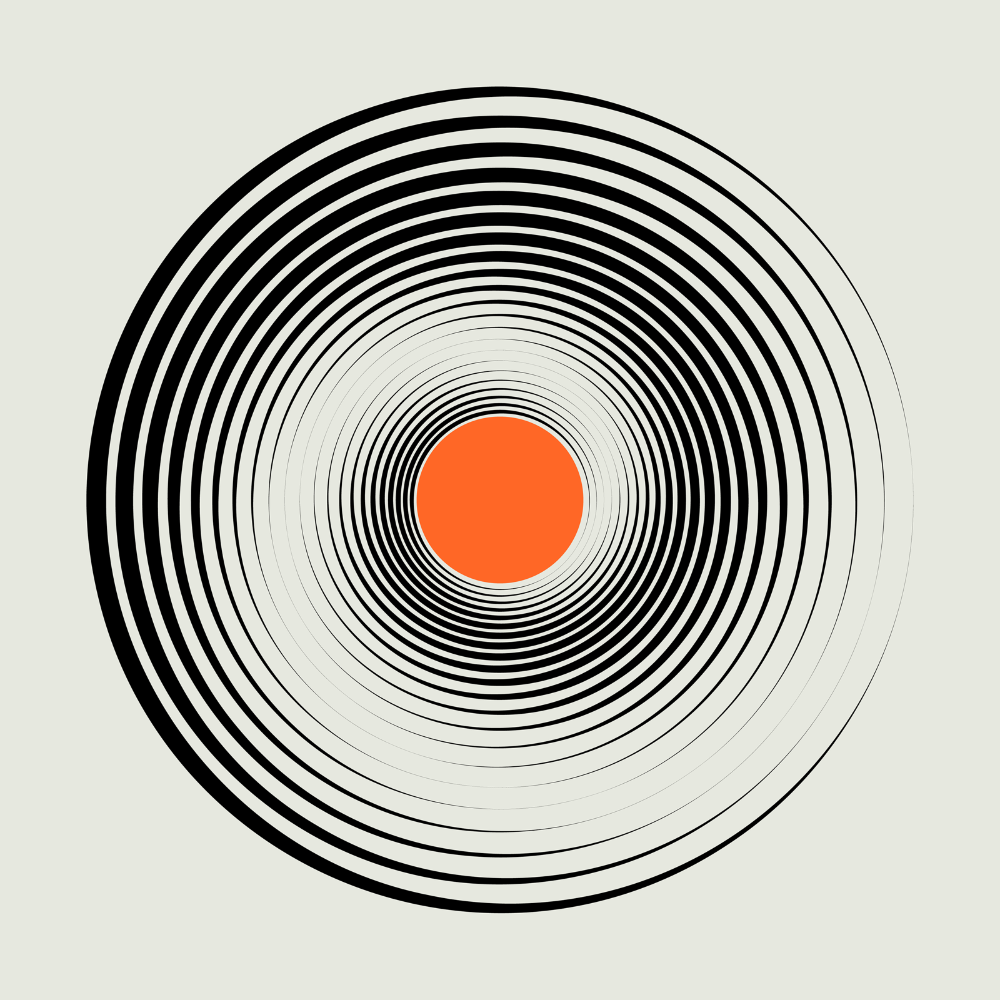

Scop
Projet donnant suite au concours ouvert lancé par Cap’taine Mousse pour créer le logo de l’ACAM (Association Cap’taine Arts & Musiques), un pôle culturel réunissant cinéma, musique, humour et danse autour de la brasserie.
L’image identitaire de la maison mère est un scaphandre et j’ai voulu lui donner un pendant, un casque de cosmonaute tourné vers et un imaginaire plus poétique — pour incarner ce nouveau volet artistique tout en gardant un lien discret avec l’univers Cap’taine Mousse.

Version en aplat du logo, accompagnée du motif « vinyle stellaire » — cercles concentriques dérivés de la visière, déclinables en étiquette ou en texture.